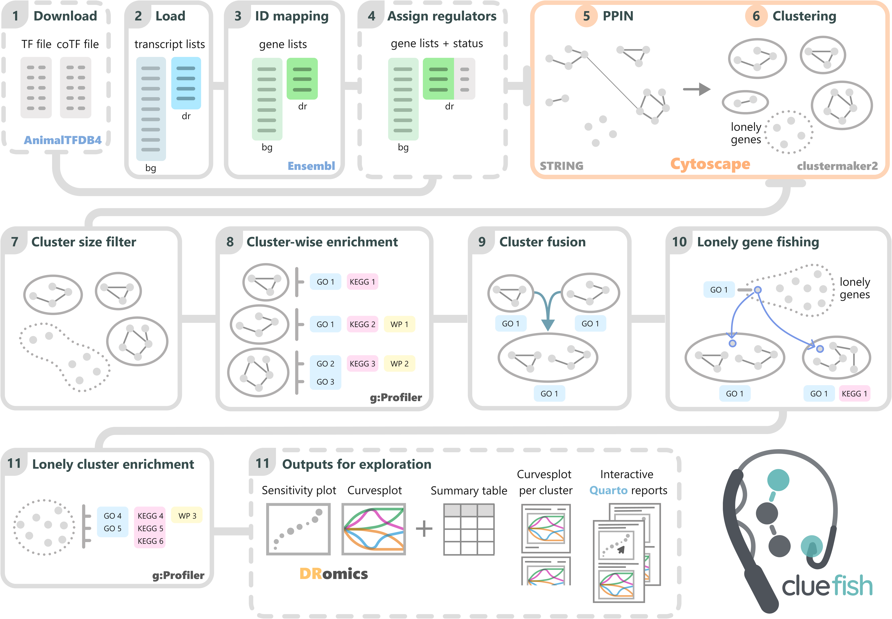

Table of Contents
Overview
Cluefish is a free and open-source, semi-automated R workflow designed for comprehensive and untargeted exploration of transcriptomic data series. Its name reflects the three key concepts driving the workflow: Clustering, Enrichment, and Fishing—metaphorically aligned with “fishing for clues”🎣 in complex biological data.
When used alongside the DRomics (Dose-Response for Omics) R package, Cluefish provides a more comprehensive analysis of dose-response transcriptomic data. In toxicology/ecotoxicology, this will support the understanding/highlighting of contaminant’s mode of action.
This workflow addresses the limitations of the standard Over-Representation Analysis (ORA) by applying ORA to pre-clustered networks. These clusters serve as anchors for ORA, enhancing enrichment detection sensitivity and thus enabling the identification of smaller, more specific biological processes while simultaneously forming exploratory gene groups.
Cluefish is designed to be adaptable to a wide range of organisms, both model and non-model, ensuring broad applicability across various biological contexts.
Installation
The Cluefish tool is developed in R, so having R installed is a prerequisite. You can download it here.
For an enhanced experience, we recommend using the RStudio integrated development environment (IDE), which is available for download at the same link, here.
You can use Cluefish locally in one of two ways:
-
Clone the repository via a terminal:
-
Install the developmental version of Cluefish from GitHub in R (
remotesneeded):if (!requireNamespace("remotes", quietly = TRUE)) install.packages("remotes") remotes::install_github("ellfran-7/cluefish")
Additional Requirements
Cluefish relies on external open source software for an intermediate step within its workflow. Please ensure the following tools are installed:
-
Cytoscape:
Cluefish uses Cytoscape in order to visualize PPI networks. Install Cytoscape from their download page.
-
Required Cytoscape Apps:
Within Cytoscape, install the StringApp and clusterMaker2 apps. To do this:
- Open Cytoscape
- Navigate to
Apps>App Store>Show App Store - Search for and install “StringApp” (for retrieving STRING protein interactions) and “clusterMaker2”” (for clustering network data).
You can also view more about these apps on the Cytoscape App Store.
Usage
To run the Cluefish workflow, you can use the make.R script, which serves as the ‘master’ script for the entire process. We recommend using this script as a template to ensure smooth and sequential execution of the workflow steps.
Required R packages
A key feature of Cluefish is the integration of renv to create reproducible environments. This allows you to install the required R packages in two ways:
- Run
renv::install()to install the most recent version of the packages listed in therenv.lockfile. - For full reproducibility, run
renv::restore()to install the exact package versions specified in therenv.lockfile. Note that this process may take longer.
Required inputs
Cluefish requires two key inputs:
- A background transcript list: Typically, this includes the identifiers for all detected transcripts in the experiment.
- A deregulated transcript list: A subset of the background list, containing the identifiers of significantly deregulated transcripts. This list can be derived using any selection method.
Recommended Selection Method
While the inputs can be derived from any selection method, Cluefish was optimised to work seamlessly with the results from DRomics, a tool tailored for dose-response modelling of omics data.
Although using DRomics is optional, Cluefish leverages some of its visualization functions and modelling metrics to provide deeper insights into the biological interpretation of the data.
For more information on DRomics, please refer to their documentation.
Workflow
A schematic overview of the Cluefish workflow is shown below. For a full, step-by-step guide, refer to the vignette, Introduction to Cluefish, which provides instructions using the ZebrafishDBP example dataset. The raw count data is publicly available on NCBI GEO and can be accessed with GSE283957.

Citation
If you use Cluefish, for the time being please cite it as follows:
Franklin E, Billoir E, Delignette-Muller M, Prud’homme S (2024). cluefish: Fishing for Clues in the Depths of Transcriptomic Data Series. R package version 1.0.0, https://ellfran-7.github.io/cluefish/.
A paper will shortly be associated with the tool.
Contributing
Contributions are what make the open source community such an amazing place to learn, inspire, and create. Any contributions you make are greatly appreciated.
If you have a suggestion that would make this better, please fork the repo and create a pull request. You can also simply open an issue with the tag “enhancement”. Don’t forget to give the project a star! Thanks again!
- Fork the Project
- Create your Feature Branch (
git checkout -b feature/AmazingIdea) - Commit your Changes (
git commit -m 'Add some AmazingIdea') - Push to the Branch (
git push origin feature/AmazingIdea) - Open a Pull Request
License
Distributed under the CeCILL Free Software License Agreement v2.1. See LICENSE.txt for more information.
CECILL-2.1 is compatible with GNU GPL. See the official CeCILL site for more information.
Contact
If you have any need that is not yet covered, any feedback on Cluefish, or anything other question, feel free to contact me !
Ellis Franklin - @elffran7 - ellis.franklin@univ-lorraine.fr
Project Link: https://github.com/ellfran-7/cluefish